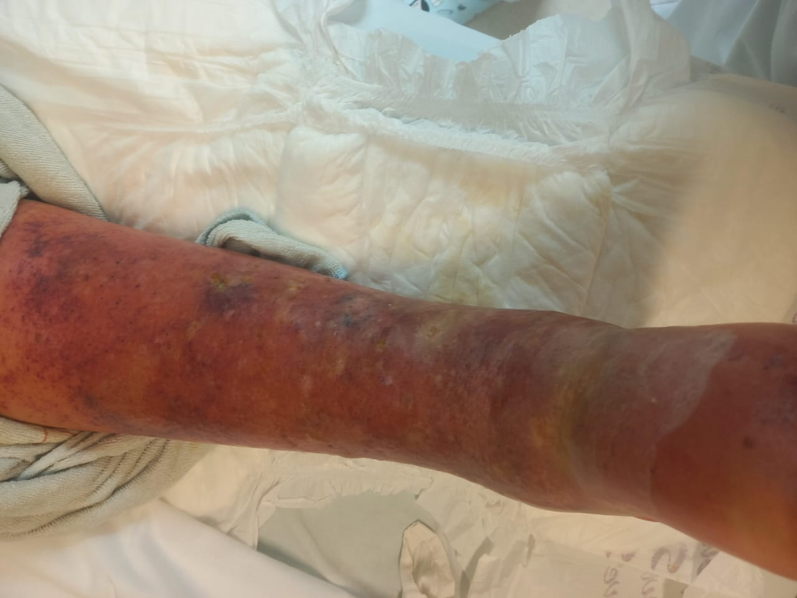
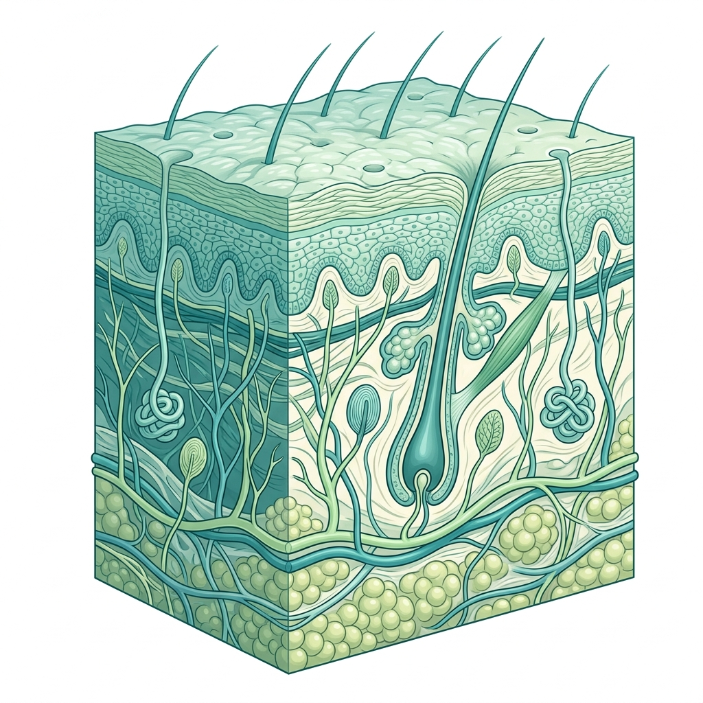
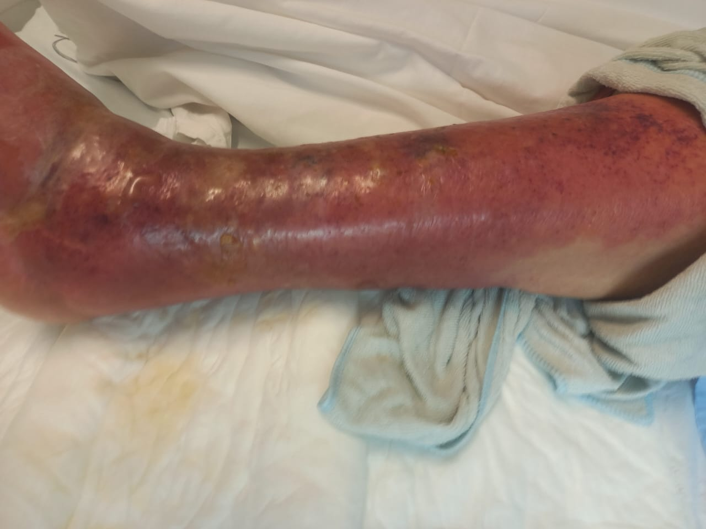
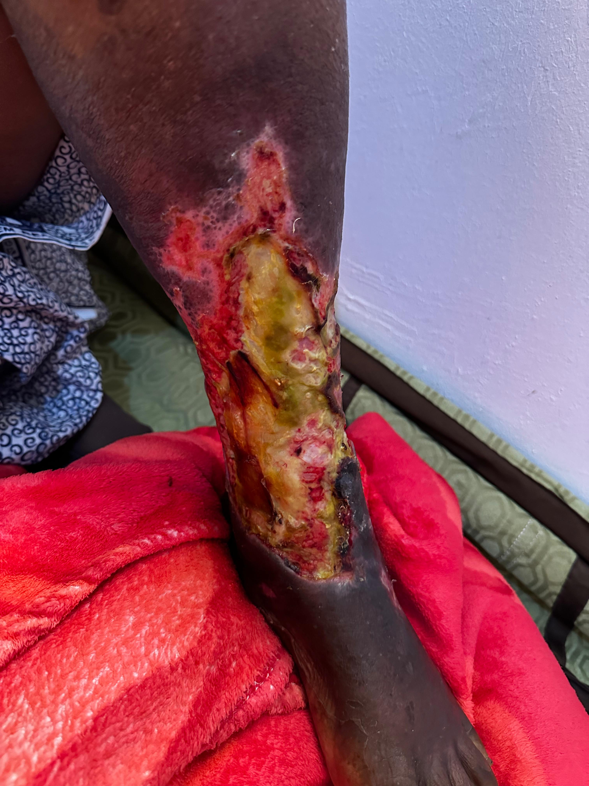
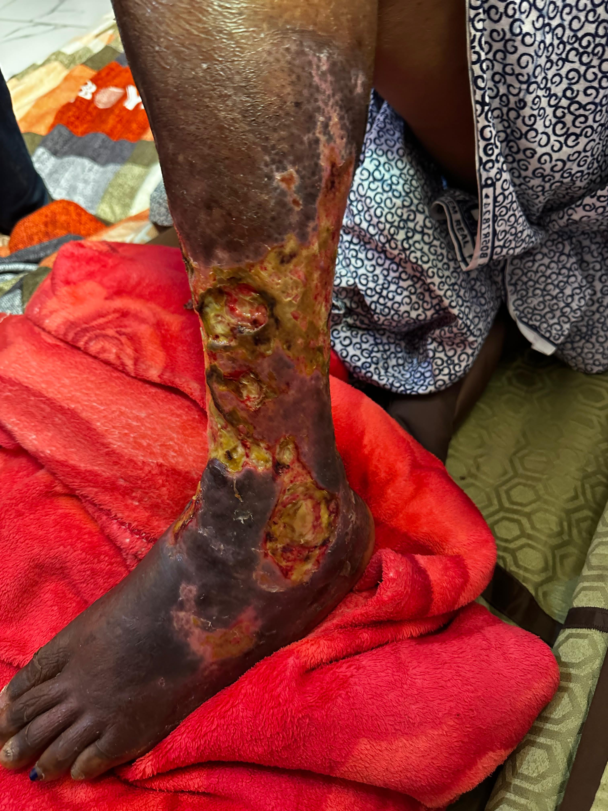
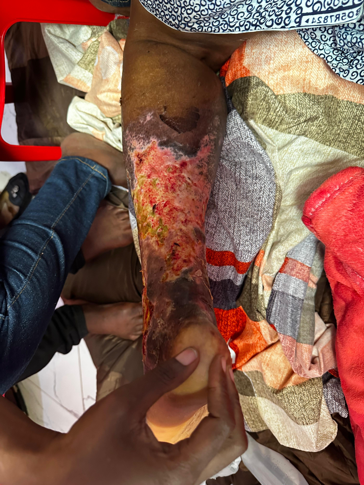
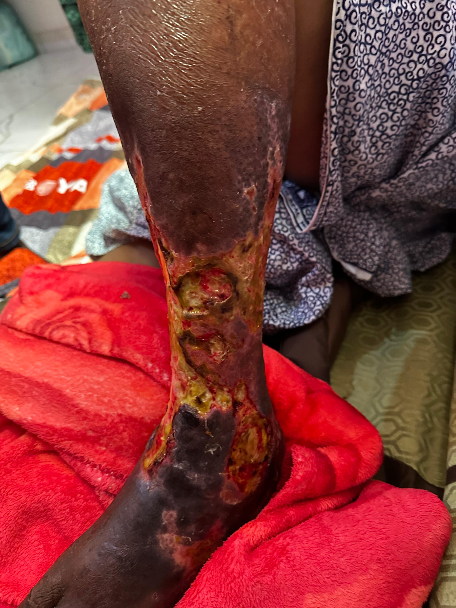
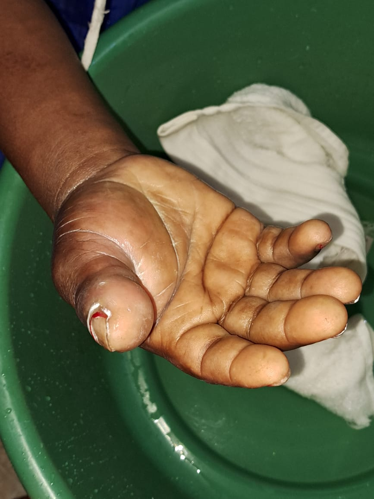

SAÚDE COMUNITÁRIA • ANGOLA
TALA:
Entre a Tradição e a Ciência
Compreender as feridas, as infecções e os sinais de alerta para agir a tempo.
Palestrante
Enfermeira Elsa
Objectivo
Salvar Membros & Vidas
O GATILHO DA REALIDADE
Por que falar sobre a “Tala”?
“Quando alguém diz que tem ‘tala na perna’, sabemos realmente o que está a acontecer no tecido?”
-
1
Expressão Comum em Angola: Usada para dor, inchaço súbito e calor na perna.
-
2
Acolher a Dor: Ouvir a interpretação do doente sem preconceitos.
-
!
Investigar a Biologia: O nome popular não substitui o diagnóstico clínico.
CASO REAL • INÍCIO AGUDO

🔍
Manifestação Aguda Inicial: Membro quente, inchado e tenso atendido em Angola.
CULTURA & COMUNIDADE
Origem do Nome e Crença Comunitária
Respeitar as pessoas para desmistificar o atraso hospitalar.
🗣️
“Tala” ou “Otala”
Termo popular presente em várias regiões. Expressa uma dor aguda que imobiliza o membro.
⚠️
A Crença Tradicional
Crença de "ter pisado algo preparado" ou feitiçaria. O perigo real é afastar o doente do hospital.
🔬
A Resposta da Enfermagem
Não julgamos. Explicamos que há bactérias e inflamações reais com cura garantida no hospital.
Meta: Proteger a vida através de cuidados médicos seguros e precoces.
FISIOPATOLOGIA
O que é a “Tala” na Ciência?
“Tala” não é uma doença única: pode corresponder a várias condições clínicas graves.
O Rótulo Não Cura
O profissional avalia a profundidade do tecido, os sinais vitais e os fatores de risco.
- ✓ Erisipela: Infecção superficial da derme e linfáticos.
- ✓ Celulite Infecciosa: Infecção profunda da gordura subcutânea.
- ! Atenção: Celulite infecciosa não é a celulite estética!
CAMADAS DA PELE

🔍
Profundidade Tecidual: Da epiderme à fáscia muscular.
FATORES DE RISCO
Quais são as Causas Reais?
A infecção surge através de portas de entrada biológicas concretas.
🚪
Portas de Entrada
Cortes, fissuras nos calcanhares, frieiras entre os dedos e picadas de insetos coçadas.
🩸
Problemas de Circulação
Varizes antigas, estase de sangue e inchaço crónico que dificultam a imunidade.
⚠️
Diabetes Mellitus
Diminui a sensibilidade e dificulta a cicatrização, acelerando a necrose tecidual.
Fator de Agravamento:
Aplicação de substâncias agressivas (pós cáusticos, cinzas ou mezinhas) irrita a ferida e multiplica as bactérias.
SEMIOLOGIA CLÍNICA
Sinais e Sintomas: O que observar?
Tétrade Inflamatória Local
- 1 Dor intensa que piora ao caminhar.
- 2 Calor local acentuado ao toque.
- 3 Inchaço (Edema) com pele esticada e brilhante.
- 4 Alteração da cor: vermelhidão ou tom arroxeado.
Pele Melanodérmica (Pele Negra):
A vermelhidão nem sempre é visível! Confie no calor tátil, no edema e na dor.
CASO REAL • EDEMA AGUDO

🔍
Edema e Tensão: Pele brilhante e escura com inflamação severa.
DIAGNÓSTICO DIFERENCIAL
Nem Todas as Feridas São Iguais
Condições que frequentemente são chamadas de "tala" mas exigem condutas distintas.
| Condição |
Manifestação |
Sinal Chave |
Conduta |
| Erisipela / Celulite |
Início rápido, perna quente, febre. |
Bordos tensos e brilhantes. |
Antibiótico sistémico imediato. |
| Úlcera Vascular |
Ferida de longa duração no tornozelo. |
Pele escura (ocre), inchaço crónico. |
Controlo venoso e pensos funcionais. |
| Pé Diabético |
Ferida na planta do pé sem dor. |
Perda de sensibilidade dos pés. |
Alívio de pressão e urgência hospitalar. |
| Abcesso |
Nódulo doloroso com pus central. |
Ponto mole/flutuante ao toque. |
Drenagem médica estéril. |
AVALIAÇÃO CLÍNICA
Como é Feito o Diagnóstico?
“Observar é importante. Investigar a causa é o que salva o membro.”
📋
1. História
Quando começou? Houve corte ou picada? É diabético?
🩺
2. Exame Físico
Delimitar a ferida com caneta; avaliar calor e pulsos.
🧪
3. Parâmetros
Febre, tensão arterial e glicemia capilar obrigatória.
🏥
4. Encaminhar
Identificar rapidamente os casos de internamento.
CONDUTA TERAPÊUTICA
Tratamento Seguro: O que Cura vs o que Prejudica
O que a Ciência Faz:
- ✓ Limpeza com soro ou água potável limpa.
- ✓ Antibiótico prescrito pelo médico (dose completa).
- ✓ Curativo estéril e elevação do membro.
O que NUNCA Fazer:
⛔ Não cortar com lâminas em casa.
⛔ Não colocar cinzas, sal ou produtos químicos.
⛔ Não abrir feridas com agulhas não estéreis.
TRATAMENTO HOSPITALAR

🔍
Técnica Asséptica: Proteção total contra bactérias oportunistas.
ALERTA VERMELHO
Sinais de Perigo: Correr para o Hospital!
Perante estes sinais, não espere pelo dia seguinte:
- 🚨 Dor Insuportável / Desproporcional
- 🚨 Inchaço que alastra rapidamente em poucas horas
- 🚨 Pele Preta (Necrose) ou grandes bolhas escuras
- 🚨 Febre alta com arrepios incontroláveis
- 🚨 Confusão mental, desmaio ou prostração
CASO REAL • NECROSE

🔍
O Risco da Demora: Perda extensa de pele por atraso na ida ao hospital.
ENFERMAGEM EM AÇÃO
O Papel da Equipa de Enfermagem
Cuidado técnico, vigilância e relação de confiança.
🔍
Avaliação Diária
Medir a ferida, vigiar secreção, temperatura e resposta ao tratamento.
🧼
Curativos Especializados
Limpeza cuidadosa, remoção de tecido desvitalizado e pensos adequados.
🤝
Educação do Doente
Orientar a família para que o tratamento não seja interrompido em casa.
CASO REAL • EVOLUÇÃO DOCUMENTADA
A Jornada da Cura: Do Perigo ao Salvamento
Como o tratamento hospitalar salvou o membro desta paciente em Angola.
1. ADMISSÃO CRÍTICA
Destruição Tecidual
Ferida extensa e risco iminente de amputação.
2. INTERVENÇÃO
Limpeza Técnica
Remoção de tecidos mortos e antibióticos orientados.
3. CURA & GRANULAÇÃO
Membro Salvo
Tecido saudável renasce e a paciente recupera a marcha.
DINÂMICA COM O PÚBLICO
Caso Prático: O que faria você?
Cenário: Um homem de 52 anos chega com a perna inchada e quente há 4 dias. A família diz: “Apanhou tala e estamos a pôr folhas e pó há 3 dias, mas agora tem febre e calafrios.”
Conduta: Não! A febre e os calafrios indicam que a infecção pode estar a entrar na corrente sanguínea.
Conduta: Tensão arterial, temperatura e glicemia capilar (despiste de Diabetes!).
Conduta: Lavagem suave para retirar pós irritantes e atendimento hospitalar de urgência.
CONCLUSÃO
Quatro Mensagens Fundamentais
1️⃣
Não é Diagnóstico
“Tala” é um nome popular para infecções reais.
2️⃣
Tempo é Tecido
Quanto mais cedo for ao hospital, menor o dano.
3️⃣
A Ciência Cura
Há tratamento eficaz com antibióticos e curativos.
4️⃣
Cuidado Humano
Respeitar as pessoas para salvar vidas.
“Não tratemos apenas o nome da doença.
Investiguemos a causa, cuidemos da pessoa e actuemos a tempo.”
EVIDÊNCIA CLÍNICA & IDENTIFICAÇÃO DO CASO
Galeria de Evidências: Diaconisa Maria Dos Santos
Demonstração detalhada das fotografias clínicas que comprovam a evolução do caso e confirmam que o pé e membro acompanhados pertencem à Diaconisa Maria Dos Santos.

Identificação
Pano com Inscrição 'Dos Santos'
Tecido tradicional com nome registado "DOS SANTOS" comprovando a identidade da paciente no leito.

Leito Familiar
Registo no Domicílio
A Diaconisa no seu ambiente familiar com a vestimenta característica e o membro em fase crítica.

Fase Crítica
Necrose e Sofrimento
Agressão tecidual profunda que colocou o pé e a vida em risco antes da chegada ao hospital.
Entrada na Unidade Hospitalar
Acolhimento da Diaconisa de cadeira de rodas, iniciando de imediato a intervenção clínica rigorosa.

Tratamento
Limpeza e Desbridamento
Aplicação de protocolo asséptico pela enfermagem para preservar a musculatura e o pé.

Correspondência
Comparação Bilateral dos Pés
Registo com ambos os pés da paciente, confirmando a correspondência anatómica e o mesmo indivíduo.

Sinal Sistémico
Mão da Diaconisa Maria
Edema evidenciado nos membros superiores e alívio com compressas durante o pico inflamatório.
Regeneração e Triunfo
Cura clínica completa: membro salvo sem amputação, devolvendo a mobilidade e a dignidade à Diaconisa.
DEBATE & ENCERRAMENTO
Perguntas, Debate & Referências
💬
Espaço para Perguntas
A Enfermeira Elsa está disponível para esclarecer dúvidas da audiência.
Muito obrigada pela vossa presença!
Saúde Comunitária em Angola 🇦🇴
Referências Clínicas Oficiais:
- 📚 OMS: The WHO AWaRe Antibiotic Book (Infecções de Pele).
- 📚 NICE Guidelines: Cellulitis and Erysipelas (NG141).
- 📚 American Academy of Dermatology: Signs in Pigmented Skin.
- 📚 Mayo Clinic: Soft Tissue Infections Complications.